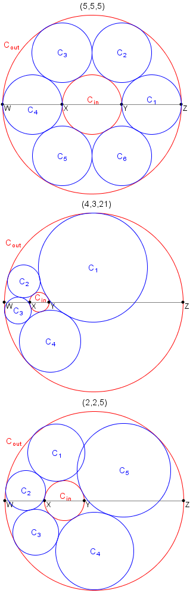

Project Euler 428
Project Euler 428
题目
Necklace of circles
Let \(a, b\) and \(c\) be positive numbers.
Let \(W, X, Y, Z\) be four collinear points where \(|WX| = a, |XY| = b, |YZ| = c\) and \(|WZ| = a + b + c\).
Let \(C_{\text{in}}\) be the circle having the diameter \(XY\).
Let \(C_{\text{out}}\) be the circle having the diameter \(WZ\).
The triplet \((a, b, c)\) is called a necklace triplet if you can place \(k \ge 3\) distinct circles \(C_1, C_2, \dots, C_k\) such that: - \(C_i\) has no common interior points with any \(C_j\) for \(1 \le i, j \le k\) and \(i \neq j\), - \(C_i\) is tangent to both \(C_{\text{in}}\) and \(C_{\text{out}}\) for \(1 \le i \le k\), - \(C_i\) is tangent to \(C_{i+1}\) for \(1 \le i < k\), and - \(C_k\) is tangent to \(C_1\).
For example, \((5, 5, 5)\) and \((4, 3, 21)\) are necklace triplets, while it can be shown that \((2, 2, 5)\) is not.

Let \(T(n)\) be the number of necklace triplets \((a, b, c)\) such that \(a, b\) and \(c\) are positive integers, and \(b \le n\). For example, \(T(1)=9, T(20)=732\) and \(T(3000)=438106\).
Find \(T(1000000000)\).
解决方案
本题的两圆都是“以线段为直径”的圆，所以它们的圆心都在同一条直线上（就是那条 \(WXYZ\) 的直线），因此它们是一对同轴圆。
把直线当作数轴，设\(W=0,X=a,Y=a+b,Z=a+b+c\)那么外圆 \(C_{\text{out}}\) 的直径是 \(WZ\)，长度 \(a+b+c\)，所以外圆半径\(R=\dfrac{a+b+c}{2}.\)内圆 \(C_{\text{in}}\) 的直径是 \(XY\)，长度 \(b\)，所以内圆半径\(r=\dfrac{b}{2}.\)外圆圆心在 \(O_{\text{out}}=\dfrac{W+Z}{2}=\dfrac{a+b+c}{2},\)内圆圆心在 \(O_{\text{in}}=\dfrac{X+Y}{2}=a+\dfrac{b}{2}.\)
所以圆心距是 \[ d=\left|O_{\text{out}}-O_{\text{in}}\right| =\left|\frac{a+b+c}{2}-\left(a+\frac{b}{2}\right)\right| =\left|\frac{c-a}{2}\right|. \]
因此我们已经把原来的 \((a,b,c)\) 变成了描述两圆相对位置的三个量 \((R,r,d)\)。
在同一条直线上有四个点 \(W<X<Y<Z\)，定义这四个点的交比为\(\lambda=\dfrac{(W-Y)(X-Z)}{(W-Z)(X-Y)}.\)
把 \(W=0,X=a,Y=a+b,Z=a+b+c\) 代入，得到\(\lambda=\dfrac{(a+b)(b+c)}{b(a+b+c)}.\)再把分子展开一下：\((a+b)(b+c)=ab+ac+b^2+bc=b(a+b+c)+ac.\)因此
\[ \lambda=\frac{b(a+b+c)+ac}{b(a+b+c)} =1+\frac{ac}{b(a+b+c)}. \]
Steiner Chain 指出，任意两个不相交的给定圆，都可以变换为两个同心圆夹着一圈等半径 Steiner 圆的情形，并且闭合性（能否闭合、闭合圆数）只取决于这对给定圆本身。
因此我们只需研究同心圆环模型即可——而对于本题这种“端点都在同一直线”的构型，\(\lambda\) 正是一个只由 \((W,X,Y,Z)\) 决定的比值量，用来刻画这对圆的相对位置；既然闭合性只取决于给定圆本身，那么闭合条件就必然可以写“\(\lambda\) 取某个特定”的形式。
这类变换保持“圆与圆相切”“相切圆串成环”的性质不变，因此“是否存在 \(k\) 圆闭合链”只和两圆本身有关。 而对本题这种“直径端点全在同一直线”的情形，四点构造的 \(\lambda\) 就恰好是那个刻画两圆相对位置的不变量。
把两圆视作已经变成同心圆。我们令\(r'\)是同心模型中内侧给定圆的半径；\(R'\)是同心模型中外侧给定圆的半径（显然 \(R'>r'>0\)）。
Steiner Chain 已经推导出了：若存在由 \(k\) 个等半径圆组成的闭合 Steiner chain，则相邻圆心夹角为 \(2\theta=\dfrac{2\pi}{k}\)，即\(\theta=\dfrac{\pi}{k},\)并且闭合所需的半径比必须满足
\[ \frac{R'}{r'} =\frac{1+\sin\theta}{1-\sin\theta} =\left(\sec\theta+\tan\theta\right)^2. \]
接下来只做一个纯代数变形。对同心圆端点取\(W=-R', X=-r', Y=r', Z=R',\)代入同样的定义，可得\(\lambda=\dfrac{(W-Y)(X-Z)}{(W-Z)(X-Y)}=\dfrac{(R'+r')^2}{4R'r'}.\)令 \(x=\dfrac{R'}{r'}\)，则\(\lambda=\dfrac{(x+1)^2}{4x}.\)
利用 \(x=\left(\sec\theta+\tan\theta\right)^2\)，并用恒等式\((\sec\theta+\tan\theta)(\sec\theta-\tan\theta)=1,\)可得\((\sec\theta+\tan\theta)+(\sec\theta-\tan\theta)=2\sec\theta.\)于是
\[ \lambda=\frac{\left((\sec\theta+\tan\theta)+(\sec\theta-\tan\theta)\right)^2}{4} =\sec^2\theta =\sec^2\left(\frac{\pi}{k}\right). \]
因为 \(\lambda\) 是两圆的“不变量”，所以原问题中算出来的\(\lambda=\dfrac{(a+b)(b+c)}{b(a+b+c)}=\dfrac{b(a+b+c)+ac}{b(a+b+c)}\)必须等于同心模型里的\(\lambda=\sec^2\left(\dfrac{\pi}{k}\right).\)于是\(\cos^2\left(\dfrac{\pi}{k}\right)=\dfrac{1}{\lambda}.\)
再用二倍角公式，得到\(\cos\left(\dfrac{2\pi}{k}\right)=2\cos^2\left(\dfrac{\pi}{k}\right)-1=\dfrac{2}{\lambda}-1.\)把 \(\lambda=\dfrac{b(a+b+c)+ac}{b(a+b+c)}\) 代入：\(\dfrac{2}{\lambda}-1=\dfrac{2b(a+b+c)}{b(a+b+c)+ac}-1=\dfrac{b(a+b+c)-ac}{b(a+b+c)+ac}.\)所以我们得到非常关键的等式：
\[ \frac{b(a+b+c)-ac}{b(a+b+c)+ac} =\cos\left(\frac{2\pi}{k}\right). \]
因为 \(a,b,c\) 是整数，所以右边这个分式是一个有理数。因此必须有\(\cos\left(\dfrac{2\pi}{k}\right)\in\mathbb{Q}.\)
而Niven 定理的推论告诉我们：当 \(k\) 为整数时，\(\cos\left(\dfrac{2\pi}{k}\right)\) 取有理数的可能值只有\(-1,-\dfrac12,0,\dfrac12,1.\)
其中 \(\pm1\) 对应 \(k=1,2\)（退化，不符合 \(k\ge3\)），因此只剩\(\cos\left(\dfrac{2\pi}{k}\right)\in\left\{-\dfrac12,0,\dfrac12\right\}\Longleftrightarrow k\in\{3,4,6\}.\)
把\(\dfrac{b(a+b+c)-ac}{b(a+b+c)+ac}=\cos\left(\dfrac{2\pi}{k}\right)\)分别代入三种值：
- 若 \(\cos\left(\dfrac{2\pi}{k}\right)=0\)（即 \(k=4\)），则\(b(a+b+c)-ac=0\Longrightarrow ac=b(a+b+c).\)
- 若 \(\cos\left(\dfrac{2\pi}{k}\right)=-\dfrac12\)（即 \(k=3\)），则\(b(a+b+c)-ac=-\dfrac12\bigl(b(a+b+c)+ac\bigr)\Longrightarrow ac=3b(a+b+c).\)
- 若 \(\cos\left(\dfrac{2\pi}{k}\right)=\dfrac12\)（即 \(k=6\)），则\(b(a+b+c)-ac=\dfrac12\bigl(b(a+b+c)+ac\bigr)\Longrightarrow3ac=b(a+b+c).\)
因此确实得到
\[ \begin{aligned} k=4:& ac=b(a+b+c),\\ k=3:& ac=3b(a+b+c),\\ k=6:& 3ac=b(a+b+c). \end{aligned} \]
接下来对这几个方程的解进行计数。
\(k=4\)
从\(ac=b(a+b+c)\)移项：\(ac-ab-bc=b^2\Longleftrightarrow(a-b)(c-b)=2b^2.\)
因为 \(a,c>0\)，且 \((a-b),(c-b)\) 为一对正整数因子，故解数恰等于 \(2b^2\) 的正因子个数：\(N_4(b)=\tau(2b^2).\)
\(k=3\)
同理从\(ac=3b(a+b+c)\)得到\((a-3b)(c-3b)=12b^2,\)因此\(N_3(b)=\tau(12b^2).\)
\(k=6\)
从\(3ac=b(a+b+c)\)变形得\((3a-b)(3c-b)=4b^2.\)令\(u=3a-b, v=3c-b,\)则\(uv=4b^2.\)此外由于 \(u\equiv -b\pmod 3\)，\(v\equiv -b\pmod 3\)，故必须满足\(u\equiv v\equiv -b\pmod 3.\)
于是 \(N_6(b)\) 就是：在所有因子对 \(uv=4b^2\) 中，满足上述同余条件的 \(u\) 的个数（此时 \(v\) 自动满足）。
把它按 \(3\mid b\) 与 \(3\nmid b\) 分开：
若 \(3\mid b\)，则 \(u\equiv v\equiv 0\pmod 3\)，可写 \(u=3u',v=3v'\)，于是\(u'v'=\dfrac{4b^2}{9}=4\left(\dfrac{b}{3}\right)^2,\)故\(N_6(b)=\tau\left(4\left(\dfrac{b}{3}\right)^2\right).\)
若 \(3\nmid b\)，则 \(4b^2\equiv 1\pmod 3\)，所有因子均为 \(\pm 1\pmod 3\)，并且若 \(u\equiv r\) 则\(v=\dfrac{4b^2}{u}\equiv r^{-1}\equiv r\pmod 3,\)因为在 \({1,2}\) 中 \(r^{-1}=r\)。因此只需数因子 \(u\) 满足\(u\equiv -b\pmod 3.\)
这一步看似麻烦，但它最终可以被按模 \(3\) 分类的因子计数统一处理。
令 \(\displaystyle{g(N,k) = \sum_{b=1}^N\tau(kb^2)}\)。令 \(\omega(n)\) 表示 \(n\) 的不同素因子个数。对无平方因子的常数 \(k\)（本题只会用到 \(k\in\{1,2,3,6\}\)），有一个关键恒等式：
引理 1（无平方因子 \(k\) 的因子展开） 若 \(k\) 无平方因子，则对任意 \(b\)：\(\displaystyle{\tau(kb^2)=\sum_{d\mid b}2^{\omega(kd)}.}\)
证明只需在素数幂上验证并利用乘法性：若 \(b=p^e\)，则左边为
\[ \tau(kp^{2e})= \begin{cases} (2e+1)\tau(k),&p\nmid k,\\ (2e+2)\tau(k),&p\mid k, \end{cases} \]
右边为
\[ \sum_{j=0}^{e}2^{\omega(kp^j)} = \begin{cases} 2^{\omega(k)}+e\cdot 2^{\omega(k)+1}=(2e+1)\cdot 2^{\omega(k)},&p\nmid k,\\ (e+1)\cdot 2^{\omega(k)}=(2e+2)\cdot 2^{\omega(k)-1}\cdot 2=(2e+2)\cdot 2^{\omega(k)},&p\mid k, \end{cases} \]
与 \(\tau(k)=2^{\omega(k)}\)（无平方因子）一致。
于是把总和交换次序：\(\displaystyle{\sum_{b\le N}\tau(kb^2)=\sum_{b\le N}\sum_{d\mid b}2^{\omega(kd)}=\sum_{d\le N}2^{\omega(kd)}\left\lfloor\frac{N}{d}\right\rfloor.}\)我们定义
\[g(N,k)=\sum_{d\ge 1}\left\lfloor\frac{N}{d}\right\rfloor 2^{\omega(kd)}.\]
则对无平方因子 \(k\)：\(\displaystyle{g(N,k)=\sum_{b\le N}\tau(kb^2).}\)从而有：\(\displaystyle{\sum_{b\le N}\tau(b^2)=g(N,1),\sum_{b\le N}\tau(2b^2)=g(N,2),\sum_{b\le N}\tau(3b^2)=g(N,3),\sum_{b\le N}\tau(6b^2)=g(N,6).}\)
注意，在本题中还出现了 \(12=2^2\cdot 3\) 与 \(4=2^2\) 这种“带平方因子”的常数。对这类 \(M\)，可以用 Möbius 反演把它降到无平方因子部分。
现在我们尝试把 \(\sum\tau(kb^2)\) 统一成一个函数 \(g(N,k)\)。
令\(\mathrm{rad}(M)\)表示\(M\)的所有质因子去重后的乘积。把 \(M\) 拆为\(M_1=\mathrm{rad}(M)\)和\(M_2=\mathrm{rad}(M/M_1)\)，也就是来自平方因子的那部分的“再去重”。则可推出：
\[ S(N,M)=\sum_{d\mid M_2}\mu(d)\tau\left(\frac{M}{M_1d}\right)S\left(N,\frac{M_1}{d}\right). \]
值得注意的是，如果\(M\)是无平方因子数，那么\(S(N,M)=g(N,M)\)。对 \(M=12\)，有 \(M_1=6\)，\(M_2=2\)，因此\(S(N,12)=\mu(1)\tau(2)S(N,6)+\mu(2)\tau(1)S(N,3)=2S(N,6)-S(N,3).\)
即\(\displaystyle{\sum_{b\le N}\tau(12b^2)=2g(N,6)-g(N,3).}\)同理 \(M=4\) 给出\(\displaystyle{\sum_{b\le N}\tau(4b^2)=2g(N,2)-g(N,1).}\)
对 \(k=6\) 的情况，核心是“因子按 \(\bmod 3\) 分类”。为此定义一个受限版本：\(\displaystyle{g_1(N)=\sum_{\substack{d\equiv 1\pmod3}}\left\lfloor\frac{N}{d}\right\rfloor 2^{\omega(d)}.}\)最终可以把所有模 \(3\) 的纠正项压缩为：\(g_1(N)-g_1\left(\left\lfloor\dfrac{N}{3}\right\rfloor\right).\)
经过整理，三类情况的总贡献可以写成一个非常紧凑的闭式：
\[ T(N)= 4g(N,6)-2g(N,2)-g(N,3) +3g\left(\left\lfloor\frac{N}{3}\right\rfloor,2\right) -g\left(\left\lfloor\frac{N}{3}\right\rfloor,1\right) -\left(g_1(N)-g_1\left(\left\lfloor\frac{N}{3}\right\rfloor\right)\right). \]
接下来，我们尝试高效计算\(g(N,1)\)。从定义出发：\(\displaystyle{g(N,1)=\sum_{d\ge 1}\left\lfloor\frac{N}{d}\right\rfloor 2^{\omega(d)}.}\)由Dirichlet 卷积：\(\displaystyle{2^{\omega(d)}=\sum_{s\mid d}\mu^2(s),\mu^2(s)=\sum_{t^2\mid s}\mu(t).}\)代入并换序，得到：\(\displaystyle{g(N,1)=\sum_{d}\left\lfloor\frac{N}{d}\right\rfloor \sum_{s\mid d}\mu^2(s)=\sum_{s}\mu^2(s)\sum_{m}\left\lfloor\frac{N}{sm}\right\rfloor.}\)
注意到\(\displaystyle{\sum_{m}\left\lfloor\frac{X}{m}\right\rfloor=\#\{(u,v):uv\le X\}.}\)再把 \(\displaystyle{\mu^2(s)=\sum_{t^2\mid s}\mu(t)}\) 展开，令 \(s=t^2q\)，则\(\displaystyle{g(N,1)=\sum_{t}\mu(t)\sum_{q}\#\{(u,v):uv\le \lfloor N/(t^2q)\rfloor\}.}\)把 \(\sum_q\) 吸收进三维计数，即\(\displaystyle{g(N,1)=\sum_{t\ge 1}\mu(t),\gamma\left(\left\lfloor\frac{N}{t^2}\right\rfloor\right)}.\)其中\(\gamma(n)=\#\{(i,j,k):ijk\le n\}.\)
为了加速，利用 \(\left\lfloor N/t^2\right\rfloor\) 在 \(t\) 上只有 \(O(N^{1/3})\) 个不同取值。 若\(v=\left\lfloor\dfrac{N}{t^2}\right\rfloor,\)则 \(t\) 的取值区间为\(\displaystyle{ t\in\left[\left\lfloor\sqrt{\frac{N}{v+1}}\right\rfloor+1,\left\lfloor\sqrt{\frac{N}{v}}\right\rfloor\right],}\)可以用预处理的 Möbius 前缀和一次性得到该区间的 \(\sum\mu(t)\)。
记 \(D_3(n)=\gamma(n)\)。经典做法是把区域按最小维度切到 \(i\le \lfloor n^{1/3}\rfloor\)。令 \(c=\lfloor n^{1/3}\rfloor\)，则可以推出（最后会证明）：
\[ D_3(n)=c^3+ 3\sum_{i=1}^{c}\left( 2\sum_{j=i+1}^{\left\lfloor\sqrt{n/i}\right\rfloor}\left\lfloor\frac{n}{ij}\right\rfloor -\left\lfloor\sqrt{\frac{n}{i}}\right\rfloor^2 +\left\lfloor\frac{n}{i^2}\right\rfloor \right). \]
其中关键的内层求和\(\displaystyle{\sum_{j=L}^{R}\left\lfloor\frac{m}{j}\right\rfloor}\)可以用数论分块在 \(O(\sqrt m)\) 段内算完：当 \(\left\lfloor m/j\right\rfloor=v\) 固定时，\(j\) 落在一段连续区间 \([j, j_2]\)。因此内层总复杂度为 \(O(n^{2/3})\)。
为了计算 \(g_1(N)-g_1\left(\left\lfloor\dfrac{N}{3}\right\rfloor\right)\)，需要一个带同余条件的三重计数 \(\beta(n)\)。定义三类集合：
- 不被 \(3\) 整除（\(i\equiv\pm1\)）
- \(i\equiv 1\pmod 3\)
- \(i\equiv 2\pmod 3\)
用与 \(\gamma\) 完全相同的三维分块，只是把“计数整数个数”替换成“计数满足同余的整数个数”，就能得到三种受限的三重计数。为此先引入计数函数
\[C_{Z}(x)=\#\{1\le t\le x:t\not\equiv 0\pmod 3\},C_{1}(x)=\#\{1\le t\le x:t\equiv 1\pmod 3\},C_{2}(x)=\#\{1\le t\le x:t\equiv 2\pmod 3\}.\]
它们都有显式表达式：\(C_{Z}(x)=x-\left\lfloor\dfrac{x}{3}\right\rfloor,C_{1}(x)=\left\lfloor\dfrac{x+2}{3}\right\rfloor,C_{2}(x)=\left\lfloor\dfrac{x+1}{3}\right\rfloor.\)
接下来定义三个三重计数：
- 所有三项都不被 \(3\) 整除的三元组数量\(\Gamma_{Z}(n)=\#\{(i,j,k):ijk\le n,i,j,k\not\equiv 0\pmod 3\}.\)
- 所有三项都 \(\equiv 1\pmod 3\) 的三元组数量\(\Gamma_{1}(n)=\#\{(i,j,k):ijk\le n,i\equiv j\equiv k\equiv 1\pmod 3\}.\)
- 所有三项都 \(\equiv 2\pmod 3\) 的三元组数量\(\Gamma_{2}(n)=\#\{(i,j,k):ijk\le n,i\equiv j\equiv k\equiv 2\pmod 3\}.\)
它们可以与和 \(\gamma\) 相同的三维分块得到，这是因为\(\gamma(n)=D_3(n)\) 的推导中，本质只用到了一个操作：对固定的 \((i,j)\)，可选的 \(k\) 数量等于 \(\left\lfloor\dfrac{n}{ij}\right\rfloor\)。
而现在如果要求 \(k\) 落在某个同余类集合里，那么对固定的 \((i,j)\)，可选 \(k\) 的数量只是把\(\left\lfloor\dfrac{n}{ij}\right\rfloor\)替换成\(C_{T}\left(\left\lfloor\dfrac{n}{ij}\right\rfloor\right),\)其中 \(T\in\{Z,1,2\}\) 表示限制 \(k\) 落在哪个集合里。同理，对固定的 \(i\)，可选 \(j\) 的数量也可以用同样的 \(C_{T}\) 计数。
因此 \(\Gamma_{Z}(n),\Gamma_1(n),\Gamma_2(n)\) 都可以定义为一个“模 \(3\) 版本的 \(D_3(n)\)”：\(\Gamma_{T}(n)=\#\{(i,j,k):ijk\le n,i,j,k\in \mathcal S_{T}\},\)其中集合为\(\mathcal S_{Z}=\{t:t\not\equiv 0\pmod 3\},\mathcal S_{1}=\{t:t\equiv 1\pmod 3\},\mathcal S_{2}=\{t:t\equiv 2\pmod 3\}.\)它们的计算过程完全沿用 \(D_3\) 的分块推导，只是把“统计 \([1..x]\) 的整数个数”改成统计“满足同余限制的个数”，即把普通计数函数\(\#\{1\le t\le x\}=x\)替换成对应的 \(C_{Z}(x),C_1(x),C_2(x)\)。也就是说，我们得到了：
\[ \Gamma_S(n)= C_S(c)^3 + 3\sum_{\substack{1\le i\le c\\i\in S}} \left( 2\sum_{\substack{i< j\le \left\lfloor\sqrt{n/i}\right\rfloor\\j\in S}} C_S\left(\left\lfloor\frac{n}{ij}\right\rfloor\right) - C_S\left(\left\lfloor\sqrt{\frac{n}{i}}\right\rfloor\right)^2 + C_S\left(\left\lfloor\frac{n}{i^2}\right\rfloor\right) \right). \]
现在考虑\(\beta(n)=\#\{(i,j,k):ijk\le n,i,j,k\not\equiv 0\pmod3,ij\equiv 1\pmod3\}.\)要把它写成 \(\Gamma\) 的线性组合，需要一个“对称化”观察。
在模 \(3\) 的非零元素群 \({1,2}\) 中只有两种元素，且\(1\cdot 1\equiv 1, 2\cdot 2\equiv 1, 1\cdot 2\equiv 2.\)因此对任意三元组 \((i,j,k)\)，在都满足 \(i,j,k\not\equiv 0\pmod 3\) 的前提下，只会出现两种情形：
- 若 \((i,j,k)\) 三项全为 \(1\) 或全为 \(2\)，则\(ij\equiv jk\equiv ki\equiv 1.\)
- 否则它们中恰有一个与另外两个不同，例如 \((1,1,2)\) 或 \((2,2,1)\)，这时三对乘积里恰好只有一对为 \(1\)，另外两对为 \(2\)。以 \((1,1,2)\) 为例：\(ij\equiv 1, jk\equiv 2, ki\equiv 2.\)
因此可以总结为：对任意 \(i,j,k\not\equiv 0\pmod 3\)：若三项全相同，则三对乘积中有 \(3\) 对 \(\equiv 1\)； 否则三对乘积中有且仅有 \(1\) 对 \(\equiv 1\)。
我们定义指示函数
\[ \mathbf 1[ij\equiv 1] = \begin{cases} 1,&ij\equiv 1\pmod 3,\\ 0,&\text{otherwise}. \end{cases} \]
那么对任意非零模 \(3\) 三元组 \((i,j,k)\)，有
$$ [ij]+[jk]+[ki] = \[\begin{cases} 3,& i\equiv j\equiv k\equiv 1\lor i\equiv j\equiv k\equiv 2\pmod 3,\\ 1,& \text{otherwise}. \end{cases}\]$$
另一方面，\(\Gamma_{Z}(n)\) 恰好枚举了所有满足 \(ijk\le n\) 且 \(i,j,k\not\equiv 0\pmod 3\) 的三元组。 其中，“三项全为 \(1\)”的三元组数量是 \(\Gamma_1(n)\)，三项全为 \(2\)的三元组数量是 \(\Gamma_2(n)\)。
因此在 \(\Gamma_{Z}(n)\) 的三元组全集中：
- 全相同的三元组数为 \(\Gamma_1(n)+\Gamma_2(n)\)
- 不全相同的三元组数为 \(\Gamma_{Z}(n)-\Gamma_1(n)-\Gamma_2(n)\)
于是把上面的等式在所有三元组上求和，得到：
\[ \sum_{(i,j,k)}\Bigl(\mathbf 1[ij\equiv 1]+\mathbf 1[jk\equiv 1]+\mathbf 1[ki\equiv 1]\Bigr) =3(\Gamma_1(n)+\Gamma_2(n)) +1\cdot\bigl(\Gamma_{Z}(n)-\Gamma_1(n)-\Gamma_2(n)\bigr) =2\Gamma_1(n)+2\Gamma_2(n)+\Gamma_{Z}(n). \]
注意左边的求和本质上是在数：三元组中满足 \(ij\equiv 1\) 的有多少个；再加上满足 \(jk\equiv 1\) 的有多少个；再加上满足 \(ki\equiv 1\) 的有多少个
而由于在 \(\Gamma_{Z}(n)\) 的约束下，\((i,j,k)\) 完全对称，所以\(\#\{(i,j,k):ijk\le n,i,j,k\not\equiv 0,ij\equiv 1\}\)与把 \((ij)\) 换成 \((jk)\) 或 \((ki)\) 的计数完全相同，三者相等，且都等于 \(\beta(n)\)。
因此左边恰好等于 \(3\beta(n)\)：\(\displaystyle{ \sum_{(i,j,k)}\Bigl(\mathbf 1[ij\equiv 1]+\mathbf 1[jk\equiv 1]+\mathbf 1[ki\equiv 1]\Bigr) =3\beta(n).}\)综合起来就得到\(3\beta(n)=2\Gamma_1(n)+2\Gamma_2(n)+\Gamma_{Z}(n),\)即
\[ \beta(n)=\frac{2\Gamma_1(n)+2\Gamma_2(n)+\Gamma_{N}(n)}{3}. \]
接下里我们介绍一下\(g(N,k)\)的计算，其中\(k\ge 2\)。
先看 \(k=2\)。对任意 \(d\)：
- 若 \(2\nmid d\)，则 \(2\) 是新引入的质因子，所以\(\omega(2d)=\omega(d)+1, 2^{\omega(2d)}=2\cdot 2^{\omega(d)}.\)
- 若 \(2\mid d\)，则 \(2\) 已经存在，所以\(\omega(2d)=\omega(d),2^{\omega(2d)}=2^{\omega(d)}.\)
令指示函数 \(\mathbf1 [2\mid d]\) 表示 “\(2\) 整除 \(d\)” 时为 \(1\)，否则为 \(0\)，则\(2^{\omega(2d)}=(2-[2\mid d])\cdot 2^{\omega(d)}.\)
代入定义：有\(\displaystyle{g(N,2)=\sum_{d\ge 1}\left\lfloor\frac{N}{d}\right\rfloor (2-[2\mid d])2^{\omega(d)}.}\)拆开成两项：\(\displaystyle{g(N,2)=2\sum_{d\ge 1}\left\lfloor\frac{N}{d}\right\rfloor 2^{\omega(d)}-\sum_{2\mid d}\left\lfloor\frac{N}{d}\right\rfloor 2^{\omega(d)}.}\)那么第一项就是 \(2g(N,1)\)。
第二项把 \(d=2d'\) 代换：\(\displaystyle{\sum_{2\mid d}\left\lfloor\frac{N}{d}\right\rfloor 2^{\omega(d)}=\sum_{d'\ge 1}\left\lfloor\frac{N}{2d'}\right\rfloor 2^{\omega(2d')}=\sum_{d'\ge 1}\left\lfloor\frac{\left\lfloor N/2\right\rfloor}{d'}\right\rfloor 2^{\omega(2d')}=g\left(\left\lfloor\frac{N}{2}\right\rfloor,2\right).}\)因此得到一个非常干净的一步递推：
\[g(N,2)=2g(N,1)-g\left(\left\lfloor\frac{N}{2}\right\rfloor,2\right)\]
对这个递推反复展开：
\[ \begin{aligned} g(N,2) &=2g(N,1)-g(\lfloor N/2\rfloor,2)\\ &=2g(N,1)-(2g(\lfloor N/2\rfloor,1)-g(\lfloor N/4\rfloor,2))\\ &=2g(N,1)-2g(\lfloor N/2\rfloor,1)+g(\lfloor N/4\rfloor,2)\\ &=\cdots \end{aligned} \]
最终因为 \(\left\lfloor N/2^t\right\rfloor\) 终会变成 \(0\)，递推终止，于是得到交错和形式：
\[ g(N,2)=2\sum_{t\ge 0}(-1)^t g\left(\left\lfloor\frac{N}{2^t}\right\rfloor,1\right). \]
同理对 \(k=3\)，有\(\displaystyle{g(N,3)=2g(N,1)-g\left(\left\lfloor\frac{N}{3}\right\rfloor,3\right),}\)于是反复展开得到
\[ g(N,3)=2\sum_{t\ge 0}(-1)^t g\left(\left\lfloor\frac{N}{3^t}\right\rfloor,1\right). \] 对于\(g(N,6)\)，这里的关键仍然是把 \(2^{\omega(6d)}\) 拆成 “是否被 \(2\) 整除” 与 “是否被 \(3\) 整除” 两个独立因素。
这里的关键仍然是把 \(2^{\omega(6d)}\) 拆成 “是否被 \(2\) 整除” 与 “是否被 \(3\) 整除” 两个独立因素。
对任意 \(d\)，那么有\(2^{\omega(6d)}=(2-[2\mid d])(2-[3\mid d])\cdot 2^{\omega(d)}=(4-2[2\mid d]-2[3\mid d]+[6\mid d])\cdot 2^{\omega(d)}.\)
代入 \(g(N,6)\) 的定义，有：
\[ \begin{aligned} g(N,6) &=\sum_{d\ge 1}\left\lfloor\frac{N}{d}\right\rfloor 2^{\omega(6d)}\\ &=\sum_{d\ge 1}\left\lfloor\frac{N}{d}\right\rfloor \left(4-2[2\mid d]-2[3\mid d]+[6\mid d]\right),2^{\omega(d)}\\ &=4\sum_{d\ge 1}\left\lfloor\frac{N}{d}\right\rfloor 2^{\omega(d)} -2\sum_{2\mid d}\left\lfloor\frac{N}{d}\right\rfloor 2^{\omega(d)} -2\sum_{3\mid d}\left\lfloor\frac{N}{d}\right\rfloor 2^{\omega(d)} +\sum_{6\mid d}\left\lfloor\frac{N}{d}\right\rfloor 2^{\omega(d)}. \end{aligned} \]
第一项是 \(4g(N,1)\)。
第二项把 \(d=2d'\) 代换：\(\displaystyle{\sum_{2\mid d}\left\lfloor\frac{N}{d}\right\rfloor 2^{\omega(d)}=\sum_{d'\ge 1}\left\lfloor\frac{N}{2d'}\right\rfloor 2^{\omega(2d')}=g\left(\left\lfloor\frac{N}{2}\right\rfloor,2\right).}\)
第三项同理：\(\displaystyle{\sum_{3\mid d}\left\lfloor\frac{N}{d}\right\rfloor 2^{\omega(d)}=g\left(\left\lfloor\frac{N}{3}\right\rfloor,3\right).}\)
第四项把 \(d=6d'\) 代换：\(\displaystyle{\sum_{6\mid d}\left\lfloor\frac{N}{d}\right\rfloor 2^{\omega(d)}=\sum_{d'\ge 1}\left\lfloor\frac{N}{6d'}\right\rfloor 2^{\omega(6d')}=g\left(\left\lfloor\frac{N}{6}\right\rfloor,6\right).}\)
因此得到递推：
\[ g(N,6)=4g(N,1)-2g\left(\left\lfloor\frac{N}{2}\right\rfloor,2\right)-2g\left(\left\lfloor\frac{N}{3}\right\rfloor,3\right)+g\left(\left\lfloor\frac{N}{6}\right\rfloor,6\right). \]
接下来我们计算 \(g_1(N)-g_1\left(\left\lfloor\dfrac{N}{3}\right\rfloor\right)\)。回想到\(\displaystyle{g_1(N)=\sum_{\substack{d\equiv 1\pmod3}}\left\lfloor\frac{N}{d}\right\rfloor 2^{\omega(d)}.}\)因此有\(\displaystyle{g_1(N)-g_1\left(\left\lfloor\frac{N}{3}\right\rfloor\right)=\sum_{\substack{d\equiv 1\pmod3}}\left(\left\lfloor\frac{N}{d}\right\rfloor-\left\lfloor\frac{N}{3d}\right\rfloor\right)2^{\omega(d)}.}\)
这一部分用到的核心公式，与 \(g(N,1)\) 的推导完全平行，关键是下面两个恒等式：
- 对任意整数 \(x\)，有\(\displaystyle{\mu(x)^2=\sum_{t^2\mid x}\mu(t).}\)它的含义是：右边通过 Möbius 反演把含平方因子的项全部抵消，最终只保留无平方因子部分。
- 因为 \(2^{\omega(n)}\) 等于 \(n\) 的无平方因子约数个数，所以\(\displaystyle{2^{\omega(n)}=\sum_{e\mid n}\mu(e)^2.}\)
注意到
- \(\left\lfloor\dfrac{N}{d}\right\rfloor\) 是满足 \(dk\le N\) 的正整数 \(k\) 的个数；
- \(\left\lfloor\dfrac{N}{3d}\right\rfloor\) 是满足 \(dk\le N\) 且 \(3\mid k\) 的 \(k\) 的个数。
所以差值恰好是满足 \(dk\le N\) 且 \(3\nmid k\) 的个数：\(\left\lfloor\dfrac{N}{d}\right\rfloor-\left\lfloor\dfrac{N}{3d}\right\rfloor=\#\left\{k\ge 1:dk\le N,3\nmid k\right\}.\)代回去得到\(\displaystyle{g_1(N)-g_1\left(\left\lfloor\frac{N}{3}\right\rfloor\right)=\sum_{\substack{d\equiv 1\pmod3}}\sum_{\substack{k\ge 1\\dk\le N\\3\nmid k}}2^{\omega(d)}.}\)
使用第二条恒等式，回代得到：\(\displaystyle{g_1(N)-g_1\left(\left\lfloor\frac{N}{3}\right\rfloor\right)=\sum_{\substack{d\equiv 1\pmod3}}\sum_{\substack{k\ge 1\\dk\le N\\3\nmid k}}\sum_{e\mid d}\mu(e)^2.}\)
交换求和次序（先选 \(e\) 再让 \(d\) 跑它的倍数）：令 \(d=e\cdot j\)，得到
\[ g_1(N)-g_1\left(\left\lfloor\frac{N}{3}\right\rfloor\right)= \sum_{e\ge 1}\mu(e)^2 \sum_{\substack{j\ge 1\\ej\equiv 1\pmod3}} \sum_{\substack{k\ge 1\\ejk\le N\\3\nmid k}} 1. \]
注意：条件 \(ej\equiv 1\pmod 3\) 自动意味着 \(3\nmid e\) 且 \(3\nmid j\)，因为只要有一个被 \(3\) 整除，左边就会 \(\equiv 0\)，不可能等于 \(1\)。
所以上式等价于
\[ g_1(N)-g_1\left(\left\lfloor\frac{N}{3}\right\rfloor\right) =\sum_{\substack{e\ge 1\\3\nmid e}}\mu(e)^2 \sum_{\substack{j\ge 1\\3\nmid j\\ej\equiv 1\pmod3}} \sum_{\substack{k\ge 1\\3\nmid k\\ejk\le N}} 1. \]
现在代入第一条恒等式，有
\[ \begin{aligned} g_1(N)-g_1\left(\left\lfloor\frac{N}{3}\right\rfloor\right)= \sum_{\substack{e\ge 1\\3\nmid e}} \left(\sum_{t^2\mid e}\mu(t)\right) \sum_{\substack{j\ge 1\\3\nmid j\\ej\equiv 1\pmod3}} \sum_{\substack{k\ge 1\\3\nmid k\\ejk\le N}} 1. \end{aligned} \]
交换 \(e\) 与 \(t\) 的求和顺序，把 \(e=t^2u\)，其中 \(u\ge 1\)，得到
\[ g_1(N)-g_1\left(\left\lfloor\frac{N}{3}\right\rfloor\right)= \sum_{t\ge 1}\mu(t) \sum_{\substack{u\ge 1\\3\nmid (t^2u)}} \sum_{\substack{j\ge 1\\3\nmid j(t^2u)\\j\equiv 1\pmod3}} \sum_{\substack{k\ge 1\\3\nmid k\\(t^2u)jk\le N}} 1. \]
如果 \(3\mid t\)，那么 \(3\mid t^2\)，从而 \(3\mid (t^2u)\)，这会使得\((t^2u)j\equiv 0\pmod 3,\)不可能满足 \((t^2u)j\equiv 1\pmod 3\)。因此 \(3\mid t\) 的所有项都会贡献 \(0\)，可以直接删掉：\(\displaystyle{\sum_{t\ge 1}\Longrightarrow \sum_{\substack{t\ge 1\\3\nmid t}}.}\)
并且当 \(3\nmid t\) 时，有\(t^2\equiv 1\pmod 3.\)于是模 \(3\) 约束\((t^2u)j\equiv 1\pmod 3\)就化简成\(uj\equiv 1\pmod 3.\)同时不等式 \((t^2u)jk\le N\) 变成\(ujk\le \left\lfloor\dfrac{N}{t^2}\right\rfloor.\)
将这些回代，得到
\[ g_1(N)-g_1\left(\left\lfloor\frac{N}{3}\right\rfloor\right)= \sum_{\substack{t\ge 1\\3\nmid t}}\mu(t) \sum_{\substack{u,j,k\ge 1\\3\nmid u,3\nmid j,3\nmid k\\uj\equiv 1\pmod3\\ujk\le \left\lfloor N/t^2\right\rfloor}} 1. \]
可见，按照\(\beta\)的定义，上层的内层求和恰好为
\[ \sum_{\substack{u,j,k\ge 1\\3\nmid u,3\nmid j,3\nmid k\\uj\equiv 1\pmod3ujk\le \left\lfloor N/t^2\right\rfloor}}1= \beta\left(\left\lfloor\frac{N}{t^2}\right\rfloor\right). \]
于是得到：
\[ g_1(N)-g_1\left(\left\lfloor\frac{N}{3}\right\rfloor\right)= \sum_{\substack{t\ge 1\\3\nmid t}}\mu(t) \beta\left(\left\lfloor\frac{N}{t^2}\right\rfloor\right). \]
最终流程如下：
- 预处理 \(\mu(1,\dots, \lfloor\sqrt N\rfloor)\) 及其前缀和。
- 计算 \(\gamma(n)\)、\(\Gamma_{N}(n)\)、\(\Gamma_1(n)\)、\(\Gamma_2(n)\)，并用哈希表记忆化。
- 用分块求和计算 \(g(N,1)\)，并记忆化不同的 \(n\)。
- 由交错和得到 \(g(N,2)\)、\(g(N,3)\)，由自递归得到 \(g(N,6)\)。
- 用 \(\beta\) + Möbius 反演得到 \(g_1(N)-g_1(\lfloor N/3\rfloor)\)。
- 代入闭式：\(T(N)=4g(N,6)-2g(N,2)-g(N,3)+3g(\lfloor N/3\rfloor,2)-g(\lfloor N/3\rfloor,1)-\bigl(g_1(N)-g_1(\lfloor N/3\rfloor)\bigr).\)
整体时间复杂度为 \(O(N^{2/3})\)。
接下来证明\(D_3\)的闭式来源。这里的 \(D_3(n)\)（也常写作 \(\gamma(n)\)）本质上就是三维的约数计数函数。等价地，它也等于三重求和
\[ D_3(n)=\sum_{x=1}^{\infty}\sum_{y=1}^{\infty}\left\lfloor \frac{n}{xy}\right\rfloor =\sum_{x=1}^{n}\sum_{y=1}^{\left\lfloor n/x\right\rfloor}\left\lfloor \frac{n}{xy}\right\rfloor . \]
令\(c=\left\lfloor n^{1/3}\right\rfloor.\)
注意：如果 \(x>c,y>c,z>c\)，那么\(xyz>c^3\ge n,\)因此任何满足 \(xyz\le n\) 的三元组，至少有一个坐标 \(\le c\)。
定义三个集合（按哪个坐标小来分）：\(A_x=\{(x,y,z):x\le c,xyz\le n\},A_y=\{(x,y,z):y\le c,xyz\le n\},A_z=\{(x,y,z):z\le c,xyz\le n\}.\)
那么全体解集就是并集：\(S=A_x\cup A_y\cup A_z,D_3(n)=|S|.\)用容斥原理（并且利用完全对称性），可以得到：
\[ |S| =3|A_x|-3|A_x\cap A_y|+|A_x\cap A_y\cap A_z|. \]
为计算\(|A_x|\)，固定 \(x=i\le c\)，则条件 \(xyz\le n\) 变成\(yz\le \left\lfloor\dfrac{n}{i}\right\rfloor.\)令\(\displaystyle{D_2(m)=\#\{(y,z)\in\mathbb Z_{>0}^2:yz\le m\}=\sum_{y=1}^{m}\left\lfloor\frac{m}{y}\right\rfloor.}\)于是\(\displaystyle{|A_x|=\sum_{i=1}^{c} D_2\left(\left\lfloor\frac{n}{i}\right\rfloor\right).}\)
为计算\(|A_x\cup A_y|\)，固定 \(x=i,y=j\)（都 \(\le c\)），则 \(z\) 的可选数是\(z\le \left\lfloor\dfrac{n}{ij}\right\rfloor.\)所以\(\displaystyle{|A_x\cap A_y|=\sum_{i=1}^{c}\sum_{j=1}^{c}\left\lfloor\frac{n}{ij}\right\rfloor=2\sum_{i=1}^{c}\sum_{j=1}^{i}\left\lfloor\frac{n}{ij}\right\rfloor- \sum_{i=1}^{c}\left\lfloor\frac{n}{i^2}\right\rfloor.}\)
为计算\(|A_x\cap A_y\cap A_z|\)，可见这就是 \(x,y,z\le c\) 的三元组数。因为 \(c^3\le n\)，所以这 \(c^3\) 个三元组全部满足 \(xyz\le n\)，因此\(|A_x\cap A_y\cap A_z|=c^3.\)
最终得到得到
\[ D_3(n)=|S|=3\sum_{i=1}^{c}D_2\left(\left\lfloor\frac{n}{i}\right\rfloor\right) -3\left(2\sum_{i=1}^{c}\sum_{j=1}^{i}\left\lfloor\frac{n}{ij}\right\rfloor -\sum_{i=1}^{c}\left\lfloor\frac{n}{i^2}\right\rfloor\right) +c^3. \]
整理成按 \(i\) 分组的形式，有：
\[ D_3(n)=c^3+3\sum_{i=1}^{c}\left( D_2\left(\left\lfloor\frac{n}{i}\right\rfloor\right) -2\sum_{j=1}^{i}\left\lfloor\frac{n}{ij}\right\rfloor +\left\lfloor\frac{n}{i^2}\right\rfloor\right). \]
可见，为计算\(D_2(m)\)，那么有
\[ D_2(m)=\sum_{y=1}^{m}\left\lfloor\frac{m}{y}\right\rfloor =2\sum_{y=1}^{\lfloor\sqrt{m}\rfloor}\left\lfloor\frac{m}{y}\right\rfloor -\lfloor\sqrt{m}\rfloor^2. \]
回代到\(D_3(n)\)，可以得到
\[ D_3(n)=c^3+ 3\sum_{i=1}^{c}\left( 2\sum_{j=i+1}^{\left\lfloor\sqrt{n/i}\right\rfloor}\left\lfloor\frac{n}{ij}\right\rfloor -\left\lfloor\sqrt{\frac{n}{i}}\right\rfloor^2 +\left\lfloor\frac{n}{i^2}\right\rfloor \right). \]
代码
1 |
|